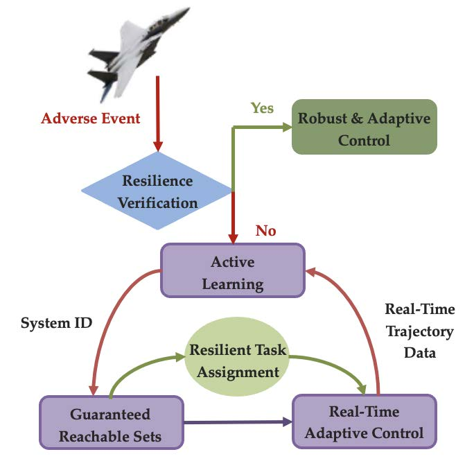

Reachability with Safety in Response to Unencountered Events
Motivating example: mid-mission catastrophe
Systems across domains operate with limited information, such as uncertainties arising from an insufficient understanding of system transitions and external forces. In this research, we focus on situations where the nonlinear system is partially unknown, with our knowledge limited to its local dynamics at a single point and constraints on the rate of change of these dynamics. Based on this limited information, we aim to implement the following pipeline (IEEE TAC 2026) for the system: First, we identify a set of states, known as the Guaranteed Reachable Set (GRS), that the unknown system can provably reach within a given timeframe from the point of known information, using underapproximation proxy dynamics. Then, we specify a state on the boundary of the GRS and synthesize a controller, enabling the partially unknown system to approach the vicinity of this state.

Below is a video demonstrating autonomous waypoint navigation appied onto an autonomous vehicle using the proposed method. We show that the car can avoid unsafe regions while safely following a narrow path to its final destination.
Incorporate prior anomaly detection for hazard prevention, reducing the risk of mid-mission catastrophes
Improve the precision of guaranteed reachable set (GRS) evaluation.
Recycle data from a single run to improve data efficiency
Tight GRS estimation for underactuated systems (UAV, robotics, etc.)
Online Learning and Control Synthesis for Reachable Paths of Unknown Nonlinear Systems.
Y. Meng, T. Shafa, J. Wei, M. Ornik.
IEEE Transactions on Automatic Control, 2026. (DOI)Reachable Predictive Control: A Novel Control Algorithm for Nonlinear Systems with Unknown Dynamics and its Practical Applications.
T. Shafa, Y. Meng, M. Ornik.
Accepted to IEEE International Conference on Robotics & Automation (ICRA). @ Vienna, Austria, 2026. (arXiv)Target Prediction Under Deceptive Switching Strategies via Outlier- Robust Filtering of Partially Observed Incomplete Trajectories.
Y. Meng, D. Li, M. Ornik.
Accepted to European Control Conference (ECC). @ Reykjavík, Iceland, 2026. (arXiv)